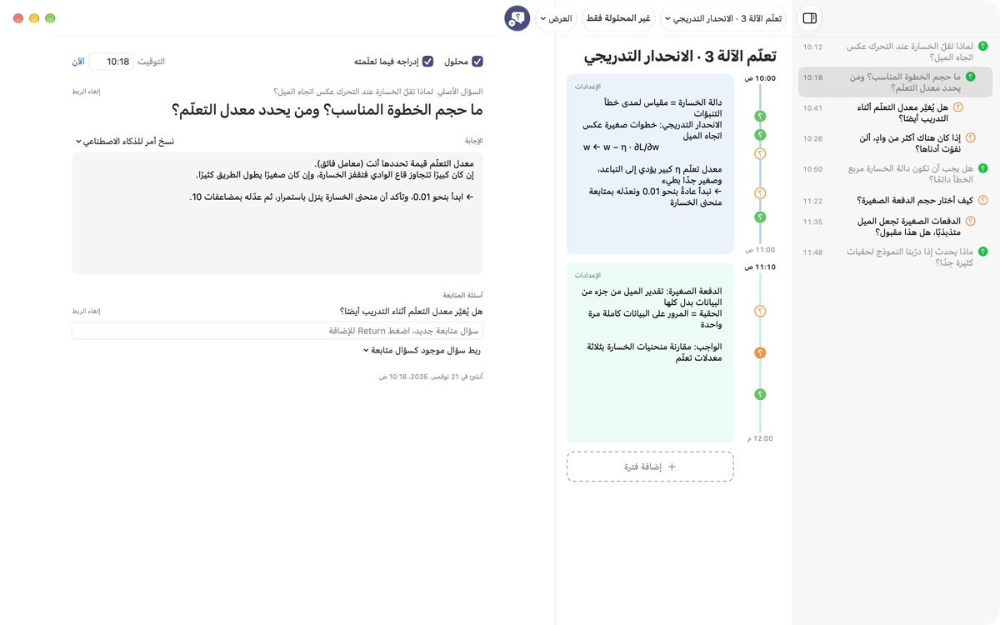
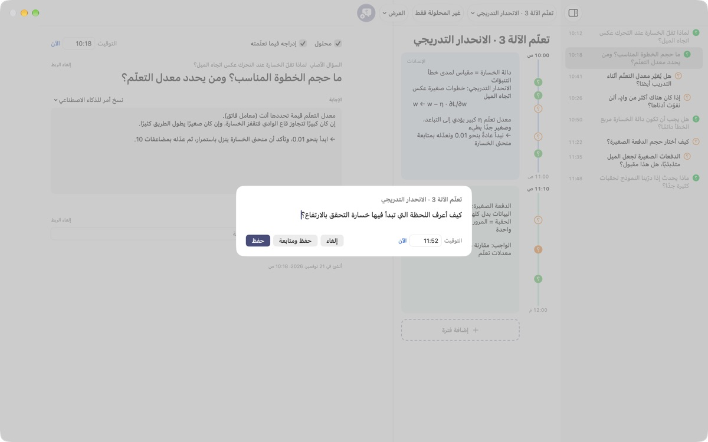
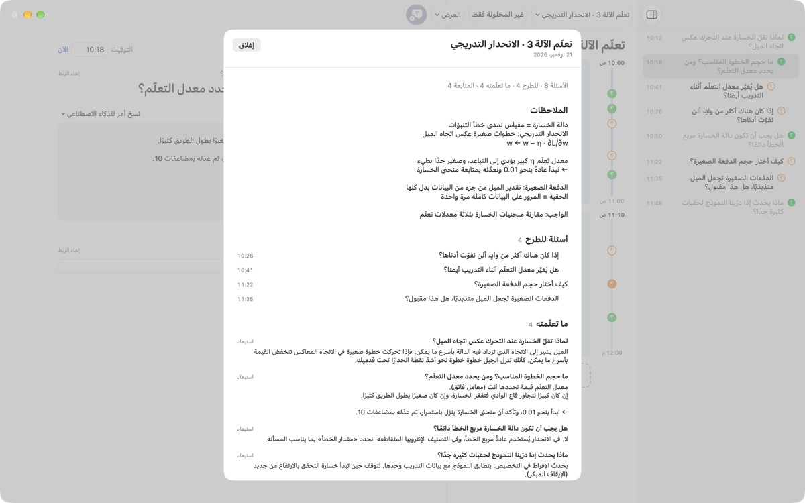
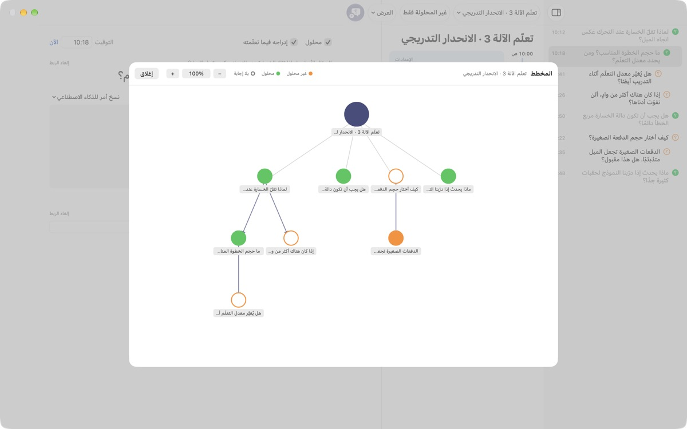

لا تدع سؤال المحاضرة
يفوتك
اضغط ⌘⇧N واكتب سطرًا واحدًا، فيستقر السؤال بجانب ملاحظات تلك الدقيقة. تابع الاستماع، وابحث عن الإجابة لاحقًا.
لأجهزة Mac (macOS 14 أو أحدث) وiPhone وiPad (iOS 18 أو أحدث). بلا حساب، والمزامنة عبر iCloud الخاص بك.

جرّبه هنا
أنت في منتصف محاضرة عن تعلّم الآلة. اكتب سؤالًا واحفظه، فتظهر علامة ? بجانب فترة ذلك الوقت. غيّر التوقيت إلى وقت خارج الفترات فتظهر فترة جديدة تحتضنه.
حين تنتهي المحاضرة، هل ما زلت تتذكر سؤالك؟
في اللحظة التي تتساءل فيها «لماذا؟» يكون المحاضر قد انتقل إلى فكرة أخرى. علامة الاستفهام في الهامش تنسى من أي شرح جاءت، فلا تجد إجابتها أبدًا. يثبّت LectureQ كل سؤال بجانب ملاحظاتك من تلك اللحظة، ويبقيه أمامك حتى تفهمه.
اسأل دون أن تفوتك الجملة التالية
افتح نافذة الإدخال من إضافة سؤال في شريط الأدوات أو بالضغط على ⌘⇧N. يُملأ التوقيت تلقائيًا. Return يحفظ، و⌘Return يحفظ ويجهّزك للسؤال التالي.
يظهر كل سؤال كعلامة ? بجانب فترته الزمنية، فتعرف لاحقًا من أي جزء في المحاضرة جاء.

الأسئلة المجاب عنها تصبح ما تعلّمته
اكتب الإجابة بأسلوبك وعلّم السؤال محلولًا، فينضم إلى «ما تعلّمته» في الملخص. وما بقي مفتوحًا يبقى تحت «أسئلة للطرح»، فتتكوّن قائمتك للمحاضرة القادمة وحدها.
يضع نسخ أمر للذكاء الاصطناعي في تفاصيل السؤال أمرًا جاهزًا في الحافظة، فيه اسم المحاضرة وملاحظاتك من تلك اللحظة. الصقه في أي خدمة ذكاء اصطناعي تستخدمها.

شاهد إلى أين ذهبت أفكارك
تتدرج أسئلة المتابعة تحت السؤال الذي تفرّعت منه، ويربط المخطط بينها بأسهم. انقر على أي عقدة لتنتقل إلى ذلك السؤال مباشرة.
وفي «حالة التعلّم» تكتب أين أنت الآن، وأين تريد أن تكون حين تنتهي الدورة، وما الذي تريد تعلّمه، ثم تقارن.

ثلاث خطوات للبدء
- 1
أنشئ محاضرة
أضفها من قائمة المحاضرات في شريط الأدوات، أو استورد محادثة محفوظة بصيغة Markdown.
- 2
دوّن السؤال لحظة وروده
اضغط
⌘⇧N. يكفي سطر واحد، والتوقيت يُملأ تلقائيًا. - 3
أجب عنه لاحقًا
اكتب الإجابة وانقر على ? لتعليمه محلولًا، فينتقل إلى «ما تعلّمته».
اختصارات لوحة المفاتيح
- ⌘⇧N
- إضافة سؤال
- Return
- حفظ
- ⌘Return
- حفظ وكتابة السؤال التالي
- Esc
- إلغاء
- ⌘1
- الملخص: أسئلة للطرح وما تعلّمته والملاحظات
- ⌘2
- المخطط: الأسئلة الأصلية وأسئلة المتابعة
- ⌘3
- الفترات الزمنية: فترات كل المحاضرات بترتيب الوقت
- ⌘4
- حالة التعلّم
- ⌘+ · ⌘- · ⌘0
- تكبير الخط وتصغيره والحجم الافتراضي
تجدها كلها في قائمة العرض أيضًا.
مجاني حتى 10 محاضرات
مجاني
- حتى 10 محاضرات، مع أسئلة وأسئلة متابعة بلا حدود
- التدوين السريع وملاحظات الفترات الزمنية وملخص المحاضرة
- خطوتان من أوامر الذكاء الاصطناعي: تحسين السؤال والبحث عن الإجابة
Plus · Pro
- Plus: محاضرات بلا حدود، وخطوات أوامر الذكاء الاصطناعي الخمس كاملة، وحالة التعلّم
- Pro: كل ما في Plus، ومعه مخطط الأسئلة وعرض كل الفترات الزمنية واستيراد Markdown وإضافة الأسئلة عبر الاختصارات وSiri
اختر اشتراكًا أسبوعيًا أو شهريًا أو سنويًا، أو ادفع مرة واحدة مدى الحياة. الإكراميات من الإعدادات منفصلة ولا تفتح أي ميزة.
بلا إعلانات وبلا حساب. ملاحظاتك تبقى على أجهزتك وفي iCloud الخاص بك.
أسئلة شائعة
ماذا تعني ألوان علامة ?
في القائمة، الدائرة البرتقالية الفارغة سؤال لم يُحل بعد، والخضراء الممتلئة سؤال محلول. انقر على ? للتبديل بينهما، وفعّل غير المحلولة فقط في شريط الأدوات لترى الأسئلة المفتوحة وحدها. وبجانب الفترة الزمنية يدل اللون على حالة الحل، والدائرة الممتلئة تعني أن الإجابة مكتوبة.
كيف تعمل الفترات الزمنية؟
انقر على إضافة فترة فتبدأ فترة جديدة من تلك اللحظة، وتنتهي الفترة السابقة عندها. وإذا أضفت سؤالًا في وقت لا تغطيه أي فترة، تُنشأ حوله فترة تلقائيًا. ومن الإعدادات أعلى الفترة غيّر لونها ووقت بدئها ومدتها أو احذفها. وإذا حذفت فترة بنفسك، يتوقف إنشاء الفترات التلقائي في تلك المحاضرة.
ما الفرق بين «محلول» و«ما تعلّمته»؟
حين تعلّم محلول في تفاصيل السؤال، يمكنك أيضًا اختيار إدراجه فيما تعلّمته. لا يظهر هناك إلا السؤال المحلول الذي أدرجته. ويمكنك استبعاده أو إعادته من الملخص، وتبقى الإجابة كما هي في الحالتين.
كيف تعمل أوامر الذكاء الاصطناعي؟
في تفاصيل السؤال افتح نسخ أمر للذكاء الاصطناعي بجانب الإجابة واختر خطوة: تحسين السؤال، أو البحث عن الإجابة، أو مساءلة الإجابة، أو استخراج أسئلة المتابعة، أو تقييم إجابتي. يُنسخ إلى الحافظة أمر فيه اسم المحاضرة وملاحظاتك من تلك اللحظة وحالة تعلّمك والسؤال الأصلي. نص الأمر نفسه بالكورية حاليًا، وتفهمه معظم خدمات الذكاء الاصطناعي، ويمكنك أن تطلب الرد بالعربية. خطوة تقييم إجابتي تحتاج أولًا إلى إجابتك في خانة الإجابة. التطبيق لا يتصل بأي خدمة ذكاء اصطناعي بنفسه.
هل أستطيع استيراد محادثة محفوظة بصيغة Markdown؟
اختر استيراد من Markdown… من قائمة المحاضرات. يصبح # العنوان اسم المحاضرة، وفي كل ## قسم يكون أول سؤال هو السؤال الأصلي وما بعده أسئلة متابعة. أسطر أول متحدث في الملف تصبح أسئلة، وأسطر غيره تصبح إجابة للسؤال الذي قبلها. لا يتغير الملف الأصلي أبدًا.
كيف أحذف سؤالًا أو محاضرة؟
انقر بزر الماوس الأيمن على السؤال في القائمة واختر حذف. أما المحاضرة فمن حذف المحاضرة الحالية في قائمة المحاضرات، وتُحذف معها أسئلتها وفتراتها. لا يمكن التراجع عن ذلك، فاحتفظ بنسخة احتياطية لما يهمك أولًا.
أين تُحفظ بياناتي، وكيف أنسخها احتياطيًا؟
كل شيء محفوظ على جهازك، وإذا كنت مسجّلًا في iCloud يتزامن بين أجهزتك Mac وiPhone وiPad عبر iCloud الخاص بك. لا يستطيع المطوّر الاطلاع عليه. للنسخ الاحتياطي على Mac أغلق التطبيق وانسخ المجلد كاملًا ~/Library/Containers/com.lectureq.LectureQ/Data/Library/Application Support/LectureQ/ بما فيه ملفات -wal و-shm. لا يرسل التطبيق إلا إحصاءات استخدام مجهولة الهوية، مثل إصدار التطبيق والأيام التي فُتح فيها، ولا يرسل أبدًا ما تكتبه.
الخط صغير جدًا.
استخدم ⌘+ للتكبير و⌘- للتصغير و⌘0 للعودة إلى الحجم الافتراضي. يتراوح الحجم بين 85% و200%، ويتذكر التطبيق اختيارك.
على أي أجهزة يعمل؟
على أي Mac بنظام macOS 14 أو أحدث، وعلى iPhone وiPad بنظام iOS أو iPadOS 18 أو أحدث. الشيفرة المصدرية متاحة على GitHub في M1zz/LectureQ.
هناك شيء لا يعمل. لمن أقول؟
أرسل ملاحظاتك من الإعدادات (⌘,) داخل التطبيق، أو راسلنا على العنوان أدناه. اذكر إصدار macOS وما كنت تفعله حين حدثت المشكلة لنتحقق منها أسرع.
أسئلة أو ملاحظات؟ راسلنا على leeo@kakao.com.